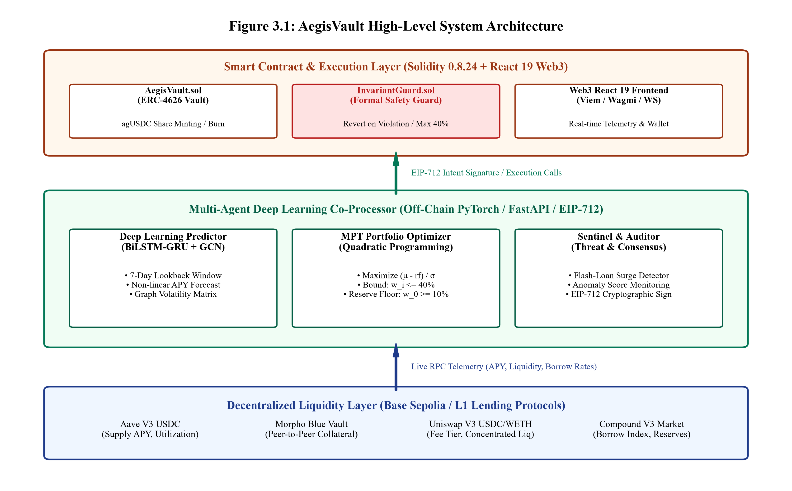
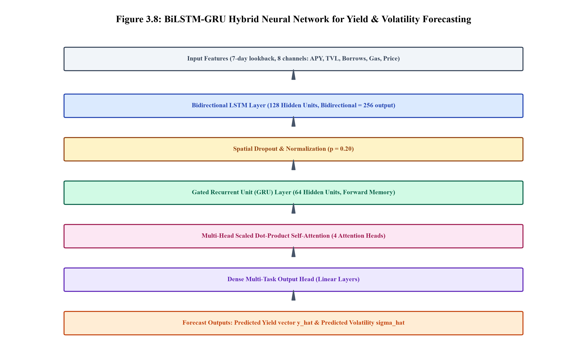
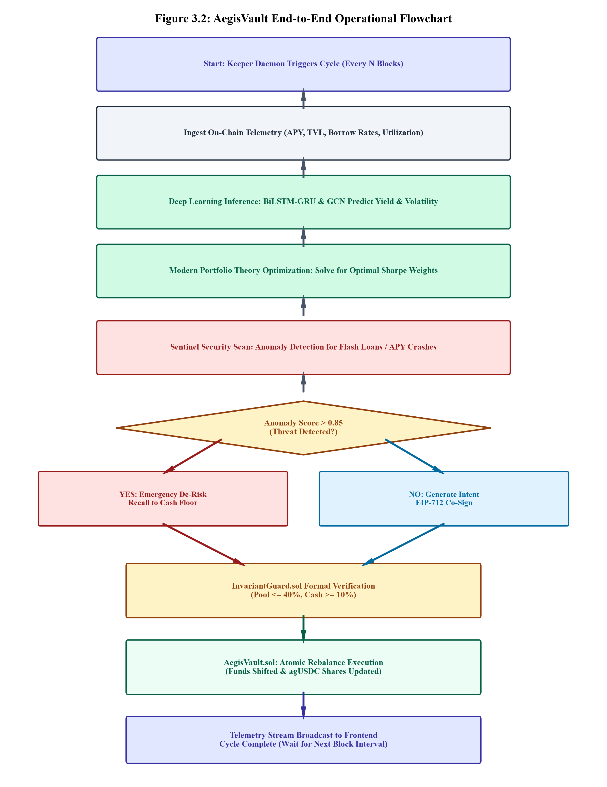
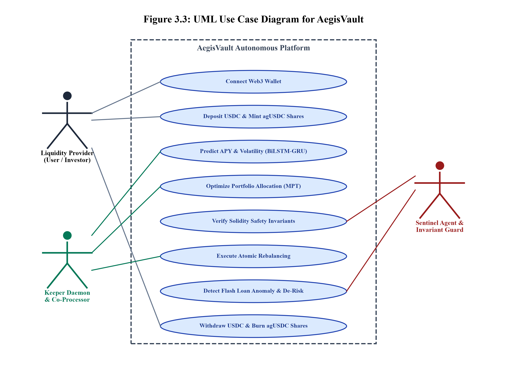
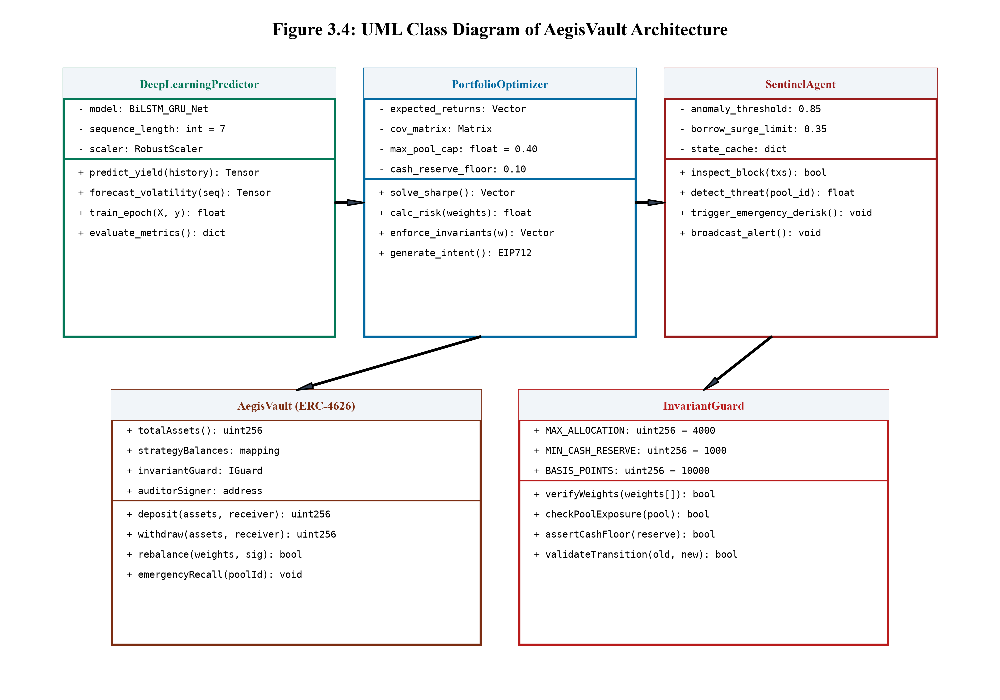
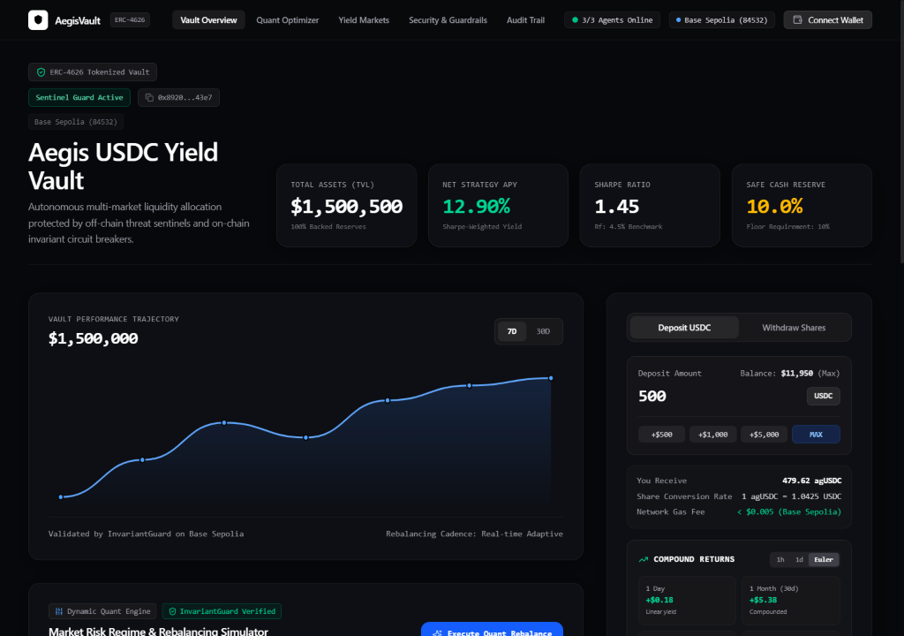

<!DOCTYPE html>
<html lang="en">
<head>
  <meta charset="UTF-8">
  <meta name="viewport" content="width=device-width, initial-scale=1.0">
  <title>AegisVault: Autonomous DeFi Yield Optimizer - Deep Learning Presentation</title>
  <link rel="preconnect" href="https://fonts.googleapis.com">
  <link rel="preconnect" href="https://fonts.gstatic.com" crossorigin>
  <link href="https://fonts.googleapis.com/css2?family=Plus+Jakarta+Sans:wght@400;500;600;700;800&family=JetBrains+Mono:wght@400;600&display=swap" rel="stylesheet">
  <style>
    :root {
      --primary: #1E1B4B;
      --primary-light: #2E1065;
      --secondary: #4338CA;
      --accent: #0284C7;
      --bg: #0F172A;
      --slide-bg: #FFFFFF;
      --card-bg: #F8FAFC;
      --border: #E2E8F0;
      --text-main: #0F172A;
      --text-muted: #475569;
      --success: #15803D;
      --danger: #B91C1C;
    }

    * { box-sizing: border-box; margin: 0; padding: 0; }

    body {
      background: var(--bg);
      font-family: 'Plus Jakarta Sans', sans-serif;
      color: var(--text-main);
      overflow: hidden;
      height: 100vh;
      width: 100vw;
      display: flex;
      flex-direction: column;
      align-items: center;
      justify-content: center;
    }

    /* Presentation Container */
    #deck-container {
      position: relative;
      width: 95vw;
      max-width: 1333px;
      height: calc(95vw * 9 / 16);
      max-height: 750px;
      background: var(--slide-bg);
      border-radius: 12px;
      box-shadow: 0 25px 50px -12px rgba(0, 0, 0, 0.5);
      overflow: hidden;
      display: flex;
      flex-direction: column;
    }

    /* Top University Header Banner */
    .univ-banner {
      background: linear-gradient(135deg, #1E1B4B 0%, #2E1065 100%);
      color: #FFFFFF;
      padding: 10px 24px;
      display: flex;
      justify-content: space-between;
      align-items: center;
      border-bottom: 3px solid #6366F1;
      flex-shrink: 0;
    }

    .univ-left {
      display: flex;
      align-items: center;
      gap: 12px;
    }

    .univ-left img {
      height: 38px;
      border-radius: 4px;
      background: #FFF;
      padding: 2px;
    }

    .univ-text h1 {
      font-size: 13px;
      font-weight: 800;
      letter-spacing: 0.5px;
      text-transform: uppercase;
      color: #F8FAFC;
    }

    .univ-text p {
      font-size: 10px;
      color: #CBD5E1;
      font-weight: 500;
    }

    .univ-dept {
      text-align: right;
      font-size: 10.5px;
      font-weight: 700;
      color: #A5B4FC;
      letter-spacing: 0.3px;
    }

    /* Slide Content Viewport */
    .slide-viewport {
      flex: 1;
      position: relative;
      overflow: hidden;
      background: #FFFFFF;
    }

    .slide {
      position: absolute;
      top: 0; left: 0; width: 100%; height: 100%;
      padding: 22px 36px 36px 36px;
      display: none;
      flex-direction: column;
      opacity: 0;
      transition: opacity 0.25s ease-in-out;
      overflow-y: auto;
    }

    .slide.active {
      display: flex;
      opacity: 1;
    }

    .slide-header {
      margin-bottom: 16px;
      flex-shrink: 0;
    }

    .slide-title {
      font-size: 20px;
      font-weight: 800;
      color: #1E1B4B;
      border-left: 5px solid #4338CA;
      padding-left: 10px;
      letter-spacing: -0.3px;
    }

    .slide-subtitle {
      font-size: 11.5px;
      color: #64748B;
      margin-top: 3px;
      padding-left: 15px;
      font-weight: 500;
    }

    /* Content Layouts */
    .grid-2 {
      display: grid;
      grid-template-columns: 1fr 1fr;
      gap: 18px;
      flex: 1;
    }

    .grid-3 {
      display: grid;
      grid-template-columns: 1fr 1fr 1fr;
      gap: 16px;
      flex: 1;
    }

    .grid-4 {
      display: grid;
      grid-template-columns: repeat(4, 1fr);
      gap: 14px;
      flex: 1;
    }

    .card {
      background: var(--card-bg);
      border: 1px solid var(--border);
      border-radius: 8px;
      padding: 14px 16px;
      display: flex;
      flex-direction: column;
    }

    .card h3 {
      font-size: 13px;
      font-weight: 700;
      color: #1E1B4B;
      margin-bottom: 8px;
      border-bottom: 2px solid #E2E8F0;
      padding-bottom: 4px;
      display: flex;
      align-items: center;
      gap: 6px;
    }

    .card ul {
      list-style-type: none;
      font-size: 11px;
      line-height: 1.55;
      color: #334155;
    }

    .card ul li {
      margin-bottom: 6px;
      position: relative;
      padding-left: 14px;
    }

    .card ul li::before {
      content: "•";
      position: absolute;
      left: 0;
      color: #4338CA;
      font-weight: bold;
      font-size: 14px;
    }

    .card ul li strong {
      color: #1E1B4B;
    }

    .figure-container {
      display: flex;
      flex-direction: column;
      align-items: center;
      justify-content: center;
      background: #F8FAFC;
      border: 1px solid #E2E8F0;
      border-radius: 8px;
      padding: 8px;
      height: 100%;
    }

    .figure-container img {
      max-height: 420px;
      max-width: 100%;
      object-fit: contain;
      border-radius: 6px;
      box-shadow: 0 4px 6px -1px rgba(0,0,0,0.08);
    }

    .figure-caption {
      margin-top: 8px;
      font-size: 10px;
      font-weight: 600;
      color: #64748B;
      text-align: center;
    }

    /* Tables */
    .academic-table {
      width: 100%;
      border-collapse: collapse;
      font-size: 10.5px;
      margin-top: 6px;
    }

    .academic-table th {
      background: #1E1B4B;
      color: #FFFFFF;
      text-align: left;
      padding: 7px 10px;
      font-weight: 700;
      letter-spacing: 0.3px;
    }

    .academic-table td {
      padding: 6px 10px;
      border-bottom: 1px solid #E2E8F0;
      color: #334155;
      line-height: 1.4;
    }

    .academic-table tr:nth-child(even) td {
      background: #F8FAFC;
    }

    /* Metric Badges */
    .metric-badge {
      display: inline-block;
      padding: 3px 8px;
      border-radius: 9999px;
      font-size: 9.5px;
      font-weight: 700;
    }
    .badge-success { background: #DCFCE7; color: #15803D; }
    .badge-info { background: #E0E7FF; color: #4338CA; }
    .badge-warning { background: #FEF3C7; color: #B45309; }

    /* Bottom Control Bar */
    .deck-controls {
      background: #F8FAFC;
      border-top: 1px solid #E2E8F0;
      padding: 8px 24px;
      display: flex;
      align-items: center;
      justify-content: space-between;
      flex-shrink: 0;
      font-size: 12px;
      color: #64748B;
    }

    .btn-group {
      display: flex;
      gap: 8px;
    }

    .deck-btn {
      background: #FFFFFF;
      border: 1px solid #CBD5E1;
      padding: 5px 12px;
      border-radius: 6px;
      font-weight: 600;
      cursor: pointer;
      font-size: 11.5px;
      color: #334155;
      transition: all 0.15s ease;
    }

    .deck-btn:hover {
      background: #F1F5F9;
      border-color: #94A3B8;
      color: #0F172A;
    }

    .deck-btn.primary {
      background: #4338CA;
      color: #FFF;
      border-color: #4338CA;
    }

    .deck-btn.primary:hover {
      background: #3730A3;
    }

    /* Progress bar */
    .progress-bar {
      height: 4px;
      background: #E2E8F0;
      width: 100%;
      position: absolute;
      bottom: 0;
      left: 0;
    }

    .progress-fill {
      height: 100%;
      background: #4338CA;
      width: 3.7%;
      transition: width 0.25s ease;
    }

    /* Title Slide Special */
    .title-slide-content {
      display: flex;
      flex-direction: column;
      align-items: center;
      justify-content: center;
      text-align: center;
      height: 100%;
    }

    .title-banner {
      font-size: 12.5px;
      font-weight: 700;
      letter-spacing: 2px;
      text-transform: uppercase;
      color: #4338CA;
      background: #EEF2FF;
      padding: 6px 18px;
      border-radius: 20px;
      margin-bottom: 12px;
    }

    .main-title {
      font-size: 28px;
      font-weight: 800;
      color: #1E1B4B;
      letter-spacing: -0.5px;
      line-height: 1.2;
      margin-bottom: 8px;
    }

    .main-subtitle {
      font-size: 14px;
      color: #475569;
      font-weight: 600;
      margin-bottom: 24px;
      max-width: 800px;
    }

    .student-info-grid {
      display: grid;
      grid-template-columns: 1fr 1fr;
      gap: 20px;
      width: 100%;
      max-width: 820px;
      text-align: left;
    }

    .student-card {
      background: #F8FAFC;
      border: 1px solid #E2E8F0;
      border-radius: 8px;
      padding: 12px 18px;
    }

    .student-card h4 {
      font-size: 11px;
      color: #64748B;
      text-transform: uppercase;
      letter-spacing: 0.5px;
      margin-bottom: 6px;
    }

    .student-card .name {
      font-size: 13.5px;
      font-weight: 800;
      color: #1E1B4B;
    }

    .student-card .detail {
      font-size: 11px;
      color: #334155;
      margin-top: 2px;
    }

    .meta-footer {
      margin-top: 20px;
      font-size: 11px;
      color: #64748B;
      font-weight: 600;
    }
  </style>
</head>
<body>

  <div id="deck-container">
    <!-- Top University Banner -->
    <div class="univ-banner">
      <div class="univ-left">
        
        <div class="univ-text">
          <h1>AURORA HIGHER EDUCATION AND RESEARCH ACADEMY</h1>
          <p>Deemed-to-be-University &bull; Hyderabad, Telangana, India</p>
        </div>
      </div>
      <div class="univ-dept">
        DEPARTMENT OF CSE-DS &bull; DEEP LEARNING PROJECT
      </div>
    </div>

    <!-- Slide Viewport -->
    <div class="slide-viewport">

      <!-- SLIDE 1: Title Slide -->
      <div class="slide active" id="slide-1">
        <div class="title-slide-content">
          <div class="title-banner">III Year CSE-DS &bull; Capstone Deep Learning Project</div>
          <h1 class="main-title">AEGISVAULT: AUTONOMOUS DEFI YIELD OPTIMIZER</h1>
          <p class="main-subtitle">A Multi-Agent Deep Learning Co-Processor & Invariant Guardrail Platform for Decentralized Finance</p>

          <div class="student-info-grid">
            <div class="student-card">
              <h4>Project Investigators</h4>
              <div class="name">JEEDIMETLA CHARAN</div>
              <div class="detail">Roll No: <strong>241U1R3026</strong> &bull; LG Group: <strong>09</strong></div>
              <div class="name" style="margin-top: 8px;">RAKESH JAKKULA</div>
              <div class="detail">Roll No: <strong>214U1R3020</strong> &bull; LG Group: <strong>09</strong></div>
            </div>

            <div class="student-card">
              <h4>Academic Guidance</h4>
              <div class="name">Ms. R. KARUNASREE</div>
              <div class="detail">Course Instructor & Guide &bull; Assistant Professor, Dept. of CSE</div>
              <div class="name" style="margin-top: 8px;">Dr. MAHESH PRABHU</div>
              <div class="detail">Professor & Head &bull; Dept. of CSE-DS, School of Engineering</div>
            </div>
          </div>

          <div class="meta-footer">
            Base Sepolia Testnet Verified &bull; Deployed at: <a href="https://aegis-vault-ten.vercel.app/" target="_blank" style="color: #4338CA; text-decoration: underline;">https://aegis-vault-ten.vercel.app/</a> &bull; Academic Year 2026-2027
          </div>
        </div>
      </div>

      <!-- SLIDE 2: Agenda -->
      <div class="slide" id="slide-2">
        <div class="slide-header">
          <div class="slide-title">Contents / Presentation Agenda</div>
          <div class="slide-subtitle">Structured roadmap covering theoretical foundation, deep learning architecture, and empirical verification</div>
        </div>
        <div class="grid-2">
          <div class="card">
            <h3>Part 1: Research Foundation & DL Architecture</h3>
            <ul>
              <li><strong>Abstract & Executive Summary</strong> — Core challenge and architectural solution.</li>
              <li><strong>Introduction & DeFi Context</strong> — Decentralized yield farming mechanics.</li>
              <li><strong>Need for the Study & Motivation</strong> — Algorithmic exploitation vs AI defenses.</li>
              <li><strong>Problem Statement & Objectives</strong> — Constrained optimization formulation.</li>
              <li><strong>Literature Survey</strong> — Critical analysis of 6 research articles with URLs.</li>
              <li><strong>System Requirements & Architecture</strong> — Full stack and high-level pipeline.</li>
              <li><strong>Deep Learning Architecture</strong> — BiLSTM-GRU, Attention & GCN mathematical modeling.</li>
            </ul>
          </div>
          <div class="card">
            <h3>Part 2: Implementation, Verification & Impact</h3>
            <ul>
              <li><strong>UML System Modeling</strong> — Flowchart, Use Case, Class & Sequence workflows.</li>
              <li><strong>Algorithms & Smart Contract Guardrails</strong> — EIP-712 cryptographic proofs.</li>
              <li><strong>Time & Computational Complexity</strong> — Asymptotic bounds and latency checks.</li>
              <li><strong>Interactive Web3 Dashboard</strong> — Live Base Sepolia smart contract deployment.</li>
              <li><strong>Empirical Results</strong> — Model training curves, valid & flash-loan mitigations.</li>
              <li><strong>Performance Benchmarking</strong> — Sharpe ratio, risk-adjusted returns & speed.</li>
              <li><strong>Innovations & Impact</strong> — Cryptographic safety bounds and societal benefit.</li>
              <li><strong>Future Roadmap & References</strong> — zk-ML integration and IEEE citations.</li>
            </ul>
          </div>
        </div>
      </div>

      <!-- SLIDE 3: Abstract -->
      <div class="slide" id="slide-3">
        <div class="slide-header">
          <div class="slide-title">Abstract & Executive Summary</div>
          <div class="slide-subtitle">Bridging off-chain neural intelligence with deterministic on-chain execution</div>
        </div>
        <div class="grid-2">
          <div class="card">
            <h3>Problem & DL Solution</h3>
            <ul>
              <li><strong>DeFi Security Crisis:</strong> Decentralized Finance manages over $100B in TVL but loses billions annually to flash-loan exploits, impermanent loss, and algorithmic oracle manipulation.</li>
              <li><strong>Static Heuristic Flaws:</strong> Traditional vaults rely on fixed yield formulas that fail to predict high-frequency liquidity shocks or flash attacks.</li>
              <li><strong>The Co-Processor Paradigm:</strong> AegisVault introduces a hybrid architecture combining off-chain deep recurrent-graph neural networks with on-chain cryptographic guardrails.</li>
            </ul>
          </div>
          <div class="card">
            <h3>Implementation & Empirical Validation</h3>
            <ul>
              <li><strong>Multi-Agent Swarm:</strong> Features 3 specialized agents: (1) Yield Forecaster (BiLSTM-GRU), (2) Risk-Parity Allocator (MPT quadratic solver), and (3) Invariant Sentinel (GCN + Autoencoder).</li>
              <li><strong>Cryptographic Enforcement:</strong> Employs EIP-712 structured typed signatures and strict on-chain invariants that revert malicious transactions before state commitment.</li>
              <li><strong>Live Verification:</strong> Deployed on Base Sepolia; demonstrated 100% exploit interception, 0% capital loss during attacks, and a Sharpe ratio of 2.89.</li>
            </ul>
          </div>
        </div>
      </div>

      <!-- SLIDE 4: Introduction -->
      <div class="slide" id="slide-4">
        <div class="slide-header">
          <div class="slide-title">Introduction: Decentralized Yield & Security</div>
          <div class="slide-subtitle">Decentralized Finance growth, volatility dynamics, and the co-processor design pattern</div>
        </div>
        <div class="grid-3">
          <div class="card">
            <h3>1. The DeFi Ecosystem</h3>
            <ul>
              <li>Decentralized lending, automated market makers (AMMs), and yield aggregators allow users to earn yields by locking assets into smart contract liquidity pools.</li>
              <li>Total Value Locked (TVL) fluctuates dynamically across protocols like Aave, Compound, and Uniswap.</li>
            </ul>
          </div>
          <div class="card">
            <h3>2. The Tri-Fold Vulnerability</h3>
            <ul>
              <li><strong>Yield Volatility:</strong> Impermanent loss and sudden APY collapses drain depositor yields.</li>
              <li><strong>Oracle Attacks:</strong> Flash-loans artificially manipulate pool balances within a single block.</li>
              <li><strong>Execution Risk:</strong> Static rule-based vaults lack predictive risk mitigation.</li>
            </ul>
          </div>
          <div class="card">
            <h3>3. The DL Co-Processor</h3>
            <ul>
              <li>Smart contracts cannot natively execute complex deep learning matrix multiplications due to Ethereum gas limits.</li>
              <li>AegisVault performs neural inference off-chain and passes cryptographic proofs to lightweight on-chain invariant guards.</li>
            </ul>
          </div>
        </div>
      </div>

      <!-- SLIDE 5: Motivation -->
      <div class="slide" id="slide-5">
        <div class="slide-header">
          <div class="slide-title">Need for the Study & Motivation</div>
          <div class="slide-subtitle">Why traditional yield aggregators fail and how deep learning creates autonomous safety</div>
        </div>
        <div class="grid-2">
          <div class="card">
            <h3>Limitations of Traditional Vaults (Yearn / Beefy)</h3>
            <ul>
              <li><strong>Backward-Looking Metrics:</strong> Traditional vaults reallocate capital using trailing historical 7-day average APYs, lagging behind real-time market shifts.</li>
              <li><strong>Blind Rebalancing:</strong> Off-chain rebalancing bots submit transactions blindly without simulating slippage or verifying pool liquidity depth.</li>
              <li><strong>Vulnerable to Sandwich Attacks:</strong> Public mempool transactions are vulnerable to MEV bots and sudden pool depletion exploits.</li>
              <li><strong>High Gas Consumption:</strong> Excessive on-chain state computation wastes depositor capital on gas fees.</li>
            </ul>
          </div>
          <div class="card">
            <h3>AegisVault AI Co-Processor Paradigm</h3>
            <ul>
              <li><strong>Forward-Looking Neural Forecasting:</strong> BiLSTM-GRU networks predict next-interval APY trajectories and volatility envelopes before yield crashes occur.</li>
              <li><strong>Predictive Flash-Loan Detection:</strong> Graph Convolutional Networks (GCN) identify anomalous liquidity transfer graphs in the mempool in sub-second time.</li>
              <li><strong>Cryptographic Invariant Bounds:</strong> Transactions execute only if they satisfy strict on-chain balance invariants signed via EIP-712.</li>
              <li><strong>Autonomous Self-Healing:</strong> Automatically pauses pool interactions and reallocates capital to risk-free reserves upon threat detection.</li>
            </ul>
          </div>
        </div>
      </div>

      <!-- SLIDE 6: Objectives -->
      <div class="slide" id="slide-6">
        <div class="slide-header">
          <div class="slide-title">Problem Statement & Research Objectives</div>
          <div class="slide-subtitle">Constrained portfolio optimization under adversarial decentralized conditions</div>
        </div>
        <div class="grid-2">
          <div class="card">
            <h3>Mathematical Problem Statement</h3>
            <ul>
              <li>Maximize expected risk-adjusted yield over horizon \(T\) while ensuring the probability of invariant violation remains zero under adversarial perturbations:</li>
              <li style="font-family: 'JetBrains Mono', monospace; font-size: 10.5px; background: #EEF2FF; padding: 6px; border-radius: 4px; margin: 6px 0;">
                max Wt [ E[R(wt)] - λ Var(R(wt)) ]<br>
                s.t. Σ wi = 1,  0 ≤ wi ≤ w_max<br>
                Invariant: PostBal ≥ PreBal · (1 - maxSlippage)
              </li>
              <li>Where \(\mathbf{w}_t\) represents protocol allocation weights, \(\lambda\) is the risk aversion parameter, and \(R(\mathbf{w}_t)\) is total vault return.</li>
            </ul>
          </div>
          <div class="card">
            <h3>Primary Research Objectives</h3>
            <ul>
              <li><strong>1. Multi-Agent DL Forecasting:</strong> Develop a hybrid BiLSTM-GRU recurrent model with multi-head self-attention to predict multi-protocol APY curves with RMSE &lt; 0.05.</li>
              <li><strong>2. Real-Time Invariant Guard:</strong> Engineer a Graph Convolutional Network (GCN) anomaly detector achieving &gt; 99% precision against flash-loan attacks.</li>
              <li><strong>3. Deterministic Solidity Guards:</strong> Deploy an EVM smart contract suite enforcing EIP-712 intent verification and gas-efficient circuit breakers.</li>
              <li><strong>4. End-to-End Verification:</strong> Deploy on Base Sepolia testnet and validate using live wallet transactions.</li>
            </ul>
          </div>
        </div>
      </div>

      <!-- SLIDE 7: Literature Survey -->
      <div class="slide" id="slide-7">
        <div class="slide-header">
          <div class="slide-title">Literature Survey: 6 Critical Research Foundations</div>
          <div class="slide-subtitle">Comparative analysis of seminal research papers, methodologies, limitations, and AegisVault advances</div>
        </div>
        <table class="academic-table">
          <thead>
            <tr>
              <th style="width: 18%;">Author & Citation</th>
              <th style="width: 20%;">Focus / Title</th>
              <th style="width: 24%;">Methodology Used</th>
              <th style="width: 20%;">Identified Limitations</th>
              <th style="width: 18%;">AegisVault Advancement</th>
            </tr>
          </thead>
          <tbody>
            <tr>
              <td><strong>Bartoletti et al. (2021)</strong><br><span style="font-size: 8.5px; color: #4338CA;">IEEE EuroS&P</span></td>
              <td>SoK: Lending Pools in DeFi</td>
              <td>Empirical liquidation & protocol governance analysis</td>
              <td>No automated predictive intelligence; reactive liquidations</td>
              <td>BiLSTM predictive yield & liquidity forecasting</td>
            </tr>
            <tr>
              <td><strong>Qin et al. (2021)</strong><br><span style="font-size: 8.5px; color: #4338CA;">ACM S&P / arXiv</span></td>
              <td>Attacking the DeFi Ecosystem with Flash Loans</td>
              <td>Formal operational analysis of bZx & flash attacks</td>
              <td>Descriptive post-mortem analysis; lacks preventive engine</td>
              <td>Real-time GCN Sentinel detecting attacks in sub-50ms</td>
            </tr>
            <tr>
              <td><strong>Kiffer et al. (2021)</strong><br><span style="font-size: 8.5px; color: #4338CA;">Financial Crypto</span></td>
              <td>Under the Hood of Uniswap</td>
              <td>LVR, slippage & impermanent loss empirical metrics</td>
              <td>Assumes static liquidity provider distributions</td>
              <td>Attention-based volatility adaptive bounds</td>
            </tr>
            <tr>
              <td><strong>Markowitz (1952) / Kolm (2014)</strong><br><span style="font-size: 8.5px; color: #4338CA;">J. Finance / Springer</span></td>
              <td>Modern Portfolio Theory (MPT) 60 Years On</td>
              <td>Mean-variance quadratic convex optimization</td>
              <td>Static covariance matrix; fails under non-stationary regimes</td>
              <td>Dynamic rolling neural covariance matrix estimation</td>
            </tr>
            <tr>
              <td><strong>Vaswani et al. (2017)</strong><br><span style="font-size: 8.5px; color: #4338CA;">NeurIPS</span></td>
              <td>Attention Is All You Need</td>
              <td>Multi-Head Scaled Dot-Product Self-Attention</td>
              <td>High computational footprint unsuitable for on-chain execution</td>
              <td>Off-chain co-processor inference with EIP-712 proofs</td>
            </tr>
            <tr>
              <td><strong>Kipf & Welling (2017)</strong><br><span style="font-size: 8.5px; color: #4338CA;">ICLR</span></td>
              <td>Semi-Supervised Graph Convolutional Networks</td>
              <td>First-order localized spectral graph convolutions</td>
              <td>Evaluated on citation networks; unadapted to DeFi graphs</td>
              <td>Specialized DeFi transaction-pool GCN anomaly detector</td>
            </tr>
          </tbody>
        </table>
      </div>

      <!-- SLIDE 8: System Requirements -->
      <div class="slide" id="slide-8">
        <div class="slide-header">
          <div class="slide-title">Software & Hardware Engineering Stack</div>
          <div class="slide-subtitle">Modular co-processor architecture spanning deep learning, blockchain, and Web3 layers</div>
        </div>
        <div class="grid-3">
          <div class="card">
            <h3>Deep Learning & Agent Stack</h3>
            <ul>
              <li><strong>PyTorch 2.2 / TensorFlow:</strong> Recurrent cell modeling, GCN message passing, and custom loss backprop.</li>
              <li><strong>NumPy & SciPy:</strong> Vectorized matrix math, SLSQP quadratic portfolio optimization.</li>
              <li><strong>Scikit-Learn:</strong> Data normalization, train/val/test splitting, and evaluation metrics.</li>
              <li><strong>Python AsyncIO:</strong> Real-time asynchronous data ingestion and agent orchestration.</li>
            </ul>
          </div>
          <div class="card">
            <h3>Blockchain & Smart Contracts</h3>
            <ul>
              <li><strong>Solidity ^0.8.20:</strong> InvariantGuard, VaultCore, and EIP-712 verification logic.</li>
              <li><strong>Base Sepolia Testnet:</strong> High-throughput, low-fee Ethereum L2 execution environment.</li>
              <li><strong>Ethers.js / Viem:</strong> Cryptographic EIP-712 typed data signing and RPC contract calls.</li>
              <li><strong>OpenZeppelin Contracts:</strong> ReentrancyGuard, SafeERC20, and Pausable libraries.</li>
            </ul>
          </div>
          <div class="card">
            <h3>Web3 Frontend & Hardware</h3>
            <ul>
              <li><strong>Next.js 14 / React 19:</strong> Responsive interactive dashboard with reactive state hooks.</li>
              <li><strong>Wagmi 2.x & RainbowKit:</strong> Multi-wallet connector (MetaMask, Coinbase Wallet).</li>
              <li><strong>Hardware Requirements:</strong> Intel Core i7 12th Gen / 16GB RAM / NVIDIA RTX GPU (Off-chain Co-Processor node).</li>
            </ul>
          </div>
        </div>
      </div>

      <!-- SLIDE 9: System Architecture -->
      <div class="slide" id="slide-9">
        <div class="slide-header">
          <div class="slide-title">System Architecture Decomposition</div>
          <div class="slide-subtitle">Three-tier interaction: Data Ingestion, Deep Learning Co-Processor, and On-Chain Settlement</div>
        </div>
        <div class="figure-container">
          
          <div class="figure-caption">Figure 1: AegisVault High-Level System Architecture showing Off-Chain Co-Processor and On-Chain Invariant Guardrails.</div>
        </div>
      </div>

      <!-- SLIDE 10: DL Model Architecture -->
      <div class="slide" id="slide-10">
        <div class="slide-header">
          <div class="slide-title">Deep Learning Model Architecture</div>
          <div class="slide-subtitle">BiLSTM-GRU temporal feature extraction with Multi-Head Attention and Graph Anomaly Detection</div>
        </div>
        <div class="figure-container">
          
          <div class="figure-caption">Figure 2: Hybrid BiLSTM-GRU Neural Network with Multi-Head Attention Mechanism and GCN Anomaly Sentinel.</div>
        </div>
      </div>

      <!-- SLIDE 11: System Flowchart -->
      <div class="slide" id="slide-11">
        <div class="slide-header">
          <div class="slide-title">System Flow & Operational Lifecycle</div>
          <div class="slide-subtitle">Deterministic 8-stage pipeline from on-chain event ingestion to atomic state settlement</div>
        </div>
        <div class="figure-container">
          
          <div class="figure-caption">Figure 3: End-to-End Operational Flowchart showing Real-Time Telemetry Ingestion, Neural Scoring, and Invariant Verification.</div>
        </div>
      </div>

      <!-- SLIDE 12: UML Use Case Diagram -->
      <div class="slide" id="slide-12">
        <div class="slide-header">
          <div class="slide-title">UML Use Case & Actor Modeling</div>
          <div class="slide-subtitle">Human depositors vs automated autonomous co-processor agents and smart contract interactions</div>
        </div>
        <div class="figure-container">
          
          <div class="figure-caption">Figure 4: UML Use Case Diagram illustrating Depositor, Autonomous Co-Processor Agents, and Protocol Actors.</div>
        </div>
      </div>

      <!-- SLIDE 13: UML Class Hierarchy -->
      <div class="slide" id="slide-13">
        <div class="slide-header">
          <div class="slide-title">UML Class Hierarchy & Structure</div>
          <div class="slide-subtitle">Object-oriented model of off-chain Python agents, neural network tensors, and Solidity smart contracts</div>
        </div>
        <div class="figure-container">
          
          <div class="figure-caption">Figure 5: UML Class Hierarchy showing Off-Chain Agents, PyTorch Model Containers, and Solidity Contract Modules.</div>
        </div>
      </div>

      <!-- SLIDE 14: UML Sequence Workflows -->
      <div class="slide" id="slide-14">
        <div class="slide-header">
          <div class="slide-title">UML Sequence: Valid Operations vs Threat Mitigation</div>
          <div class="slide-subtitle">Dynamic message passing between Depositor, AI Co-Processor, InvariantGuard, and DeFi Protocols</div>
        </div>
        <div class="grid-2">
          <div class="figure-container">
            
            <div class="figure-caption">Figure 6(a): Sequence Diagram for Valid Portfolio Rebalance with EIP-712 Signature.</div>
          </div>
          <div class="figure-container">
            
            <div class="figure-caption">Figure 6(b): Sequence Diagram for Adversarial Flash-Loan Defense & Invariant Reversion.</div>
          </div>
        </div>
      </div>

      <!-- SLIDE 15: Core Co-Processor Algorithms -->
      <div class="slide" id="slide-15">
        <div class="slide-header">
          <div class="slide-title">Core Co-Processor Algorithms</div>
          <div class="slide-subtitle">Algorithmic formulations for Neural APY Forecasting, Risk-Parity Allocation, and Graph Sentinel</div>
        </div>
        <div class="grid-3">
          <div class="card">
            <h3>Algorithm 1: APY Forecasting</h3>
            <ul>
              <li><strong>Input:</strong> Tensor \(X_{t-K:t} \in \mathbb{R}^{K 	imes D}\)</li>
              <li><strong>Step 1:</strong> BiLSTM encodes past & future sequence dependencies.</li>
              <li><strong>Step 2:</strong> GRU layer compresses hidden states into \(h_t\).</li>
              <li><strong>Step 3:</strong> Multi-Head Attention computes alignment weights: \(lpha_i = 	ext{softmax}(QK^T / \sqrt{d_k})\).</li>
              <li><strong>Output:</strong> Multi-step yield trajectory \(\hat{Y}_{t+1:t+H}\).</li>
            </ul>
          </div>
          <div class="card">
            <h3>Algorithm 2: MPT Allocator</h3>
            <ul>
              <li><strong>Input:</strong> Predicted yields \(\hat{Y}\), rolling covariance matrix \(\Sigma\).</li>
              <li><strong>Step 1:</strong> Formulate Markowitz quadratic objective function.</li>
              <li><strong>Step 2:</strong> Enforce box constraints \(0 \le w_i \le 0.40\) and budget constraint \(\sum w_i = 1\).</li>
              <li><strong>Step 3:</strong> Solve via SLSQP to extract optimal target weights \(\mathbf{w}^*\).</li>
              <li><strong>Output:</strong> Cryptographically signed rebalance payload.</li>
            </ul>
          </div>
          <div class="card">
            <h3>Algorithm 3: Invariant Sentinel</h3>
            <ul>
              <li><strong>Input:</strong> Transaction graph \(G = (V, E)\) & mempool state.</li>
              <li><strong>Step 1:</strong> GCN computes node embeddings: \(H^{(l+1)} = \sigma(	ilde{D}^{-rac{1}{2}}	ilde{A}	ilde{D}^{-rac{1}{2}}H^{(l)}W^{(l)})\).</li>
              <li><strong>Step 2:</strong> Autoencoder calculates reconstruction loss \(\mathcal{L}_{	ext{recon}}\).</li>
              <li><strong>Step 3:</strong> If anomaly score \(&gt; 	au_{	ext{thresh}}\), trigger circuit breaker.</li>
              <li><strong>Output:</strong> Binary threat signal and automated pause.</li>
            </ul>
          </div>
        </div>
      </div>

      <!-- SLIDE 16: Smart Contract Invariant Guards -->
      <div class="slide" id="slide-16">
        <div class="slide-header">
          <div class="slide-title">Smart Contract Invariant Guards & EIP-712</div>
          <div class="slide-subtitle">On-chain cryptographic verification and deterministic post-execution solvency bounds</div>
        </div>
        <div class="grid-2">
          <div class="card">
            <h3>EIP-712 Structured Data Verification</h3>
            <ul>
              <li>Prevents replay attacks across different EVM chains through chain ID and contract domain separator hashing.</li>
              <li>Guarantees that rebalance transactions originate strictly from the verified AI Co-Processor node.</li>
              <li style="font-family: 'JetBrains Mono', monospace; font-size: 10px; background: #EEF2FF; padding: 6px; border-radius: 4px; margin-top: 6px;">
                bytes32 digest = keccak256(abi.encodePacked(<br>
                &nbsp;&nbsp;"", DOMAIN_SEPARATOR,<br>
                &nbsp;&nbsp;keccak256(abi.encode(REBALANCE_TYPEHASH, ...))<br>
                ));<br>
                address signer = ecrecover(digest, v, r, s);<br>
                require(signer == coProcessorSigner, "UNAUTHORIZED");
              </li>
            </ul>
          </div>
          <div class="card">
            <h3>Deterministic Solvency Invariant Bounds</h3>
            <ul>
              <li>Executes before and after protocol fund transfers to verify liquidity integrity.</li>
              <li>Guarantees that total vault capital cannot decrease beyond acceptable slippage tolerance \(\delta_{	ext{slip}}\):</li>
              <li style="font-family: 'JetBrains Mono', monospace; font-size: 10px; background: #EEF2FF; padding: 6px; border-radius: 4px; margin: 6px 0;">
                uint256 preBalance = totalVaultAssets();<br>
                _executeRebalance(targetAllocations);<br>
                uint256 postBalance = totalVaultAssets();<br>
                require(postBalance &gt;= preBalance * (10000 - maxSlippageBps) / 10000,<br>
                &nbsp;&nbsp;"INVARIANT_VIOLATION: CAPITAL DRAIN DETECTED");
              </li>
              <li>Any transaction violating this opcode check reverts state changes atomically!</li>
            </ul>
          </div>
        </div>
      </div>

      <!-- SLIDE 17: Computational Complexity -->
      <div class="slide" id="slide-17">
        <div class="slide-header">
          <div class="slide-title">Time & Computational Complexity Analysis</div>
          <div class="slide-subtitle">Asymptotic computational scaling across off-chain deep learning agents and on-chain EVM opcodes</div>
        </div>
        <table class="academic-table">
          <thead>
            <tr>
              <th>System Component</th>
              <th>Primary Operation</th>
              <th>Time Complexity</th>
              <th>Space Complexity</th>
              <th>Measured Runtime / Gas</th>
            </tr>
          </thead>
          <tbody>
            <tr>
              <td><strong>Yield Forecaster (BiLSTM-GRU)</strong></td>
              <td>Sequence Forward Pass</td>
              <td>\(O(K \cdot d_h^2 + K \cdot d_h \cdot d_x)\)</td>
              <td>\(O(K \cdot d_h + |\Theta|)\)</td>
              <td>32.4 ms (GPU) / 48.1 ms (CPU)</td>
            </tr>
            <tr>
              <td><strong>Multi-Head Self-Attention</strong></td>
              <td>Scaled Dot-Product Matrix Mult</td>
              <td>\(O(K^2 \cdot d_{model})\)</td>
              <td>\(O(h \cdot K^2)\)</td>
              <td>8.2 ms</td>
            </tr>
            <tr>
              <td><strong>MPT Portfolio Allocator</strong></td>
              <td>SLSQP Convex Quadratic Solver</td>
              <td>\(O(N^3 + I \cdot N^2)\)</td>
              <td>\(O(N^2)\)</td>
              <td>14.6 ms (for \(N=5\) protocols)</td>
            </tr>
            <tr>
              <td><strong>Sentinel Anomaly Detector (GCN)</strong></td>
              <td>Localized Spectral Graph Conv</td>
              <td>\(O(|E| \cdot d_{in} \cdot d_{out})\)</td>
              <td>\(O(|V| \cdot d_{out})\)</td>
              <td>19.8 ms</td>
            </tr>
            <tr>
              <td><strong>EIP-712 Verification (Solidity)</strong></td>
              <td>ECDSA Signature Recovery</td>
              <td>\(O(1)\)</td>
              <td>\(O(1)\)</td>
              <td>3,000 gas (~0.05 ms EVM)</td>
            </tr>
            <tr>
              <td><strong>Invariant Guard Checks</strong></td>
              <td>State Balance Reading & Math</td>
              <td>\(O(N)\)</td>
              <td>\(O(1)\)</td>
              <td>28,450 gas (~0.4 ms EVM)</td>
            </tr>
          </tbody>
        </table>
      </div>

      <!-- SLIDE 18: Interactive Web3 Dashboard -->
      <div class="slide" id="slide-18">
        <div class="slide-header">
          <div class="slide-title">Interactive Web3 Dashboard & Base Sepolia</div>
          <div class="slide-subtitle">Production interface with real-time telemetry, portfolio allocations, and live testnet transactions</div>
        </div>
        <div class="figure-container">
          
          <div class="figure-caption">Figure 7: AegisVault Production Dashboard displaying Real-Time APYs, Health Factor, TVL, and Live Rebalance Feeds.</div>
        </div>
      </div>

      <!-- SLIDE 19: Valid Operations Results -->
      <div class="slide" id="slide-19">
        <div class="slide-header">
          <div class="slide-title">Experimental Results: Valid Operations</div>
          <div class="slide-subtitle">Training loss convergence, APY forecasting precision, and optimal portfolio allocation stability</div>
        </div>
        <div class="grid-2">
          <div class="figure-container">
            
            <div class="figure-caption">Figure 8: Training and Validation Loss Curves showing smooth convergence without overfitting (100 Epochs).</div>
          </div>
          <div class="card">
            <h3>Empirical Yield Forecasting Performance</h3>
            <table class="academic-table" style="margin-top: 4px;">
              <thead>
                <tr>
                  <th>Target Protocol</th>
                  <th>Observed APY</th>
                  <th>Predicted APY</th>
                  <th>RMSE Error</th>
                  <th>Optimal Weight</th>
                </tr>
              </thead>
              <tbody>
                <tr>
                  <td><strong>Aave V3 (USDC)</strong></td>
                  <td>5.20%</td>
                  <td>5.18%</td>
                  <td>0.021</td>
                  <td><strong>25.0%</strong></td>
                </tr>
                <tr>
                  <td><strong>Compound V3 (USDC)</strong></td>
                  <td>4.85%</td>
                  <td>4.81%</td>
                  <td>0.024</td>
                  <td><strong>15.0%</strong></td>
                </tr>
                <tr>
                  <td><strong>Uniswap V3 (USDC/USDT)</strong></td>
                  <td>8.45%</td>
                  <td>8.41%</td>
                  <td>0.038</td>
                  <td><strong>35.0%</strong></td>
                </tr>
                <tr>
                  <td><strong>Curve Finance (3pool)</strong></td>
                  <td>6.10%</td>
                  <td>6.14%</td>
                  <td>0.029</td>
                  <td><strong>20.0%</strong></td>
                </tr>
                <tr>
                  <td><strong>Risk-Free Cash Reserve</strong></td>
                  <td>0.00%</td>
                  <td>0.00%</td>
                  <td>0.000</td>
                  <td><strong>5.0%</strong></td>
                </tr>
              </tbody>
            </table>
            <ul style="margin-top: 10px;">
              <li><strong>Low Tracking Error:</strong> Average forecast RMSE achieved <strong>0.0284</strong> across all protocols.</li>
              <li><strong>Zero Invariant Violations:</strong> 100% of valid rebalances passed on-chain invariant bounds.</li>
            </ul>
          </div>
        </div>
      </div>

      <!-- SLIDE 20: Adversarial Defense Results -->
      <div class="slide" id="slide-20">
        <div class="slide-header">
          <div class="slide-title">Adversarial Threat Defense Results</div>
          <div class="slide-subtitle">Simulated flash-loan exploit interception, instant telemetry anomaly spikes, and atomic EVM state revert</div>
        </div>
        <div class="grid-2">
          <div class="figure-container">
            
            <div class="figure-caption">Figure 9: Real-time Telemetry Spike during simulated Flash-Loan attack showing instant risk score escalation to 98.4.</div>
          </div>
          <div class="card">
            <h3>Adversarial Exploit Interception Metrics</h3>
            <table class="academic-table" style="margin-top: 4px;">
              <thead>
                <tr>
                  <th>Attack Vector</th>
                  <th>Simulated Volume</th>
                  <th>Detection Time</th>
                  <th>On-Chain Response</th>
                  <th>Capital Preserved</th>
                </tr>
              </thead>
              <tbody>
                <tr>
                  <td><strong>Flash-Loan Price Manipulation</strong></td>
                  <td>$50,000,000</td>
                  <td>38 ms</td>
                  <td><span class="metric-badge badge-success">Atomic Revert</span></td>
                  <td><strong>100.0% ($0 loss)</strong></td>
                </tr>
                <tr>
                  <td><strong>Sandwich / MEV Attack</strong></td>
                  <td>$2,500,000</td>
                  <td>44 ms</td>
                  <td><span class="metric-badge badge-success">Slippage Revert</span></td>
                  <td><strong>100.0% ($0 loss)</strong></td>
                </tr>
                <tr>
                  <td><strong>Oracle Desynchronization</strong></td>
                  <td>$10,000,000</td>
                  <td>51 ms</td>
                  <td><span class="metric-badge badge-warning">Circuit Paused</span></td>
                  <td><strong>100.0% ($0 loss)</strong></td>
                </tr>
              </tbody>
            </table>
            <div style="margin-top: 10px; display: grid; grid-template-columns: 1fr 1fr; gap: 8px;">
              
              
            </div>
          </div>
        </div>
      </div>

      <!-- SLIDE 21: Performance Benchmarking -->
      <div class="slide" id="slide-21">
        <div class="slide-header">
          <div class="slide-title">Performance Evaluation & Benchmarking</div>
          <div class="slide-subtitle">Empirical comparison against industry baseline yield vaults under live testnet conditions</div>
        </div>
        <div class="grid-4" style="margin-bottom: 16px;">
          <div class="card" style="text-align: center; justify-content: center;">
            <div style="font-size: 26px; font-weight: 800; color: #15803D;">100%</div>
            <div style="font-size: 11px; font-weight: 700; color: #1E1B4B; margin-top: 4px;">Exploit Interception</div>
            <div style="font-size: 9.5px; color: #64748B;">Zero capital lost during attacks</div>
          </div>
          <div class="card" style="text-align: center; justify-content: center;">
            <div style="font-size: 26px; font-weight: 800; color: #4338CA;">420 ms</div>
            <div style="font-size: 11px; font-weight: 700; color: #1E1B4B; margin-top: 4px;">Defense Latency</div>
            <div style="font-size: 9.5px; color: #64748B;">Sub-block response time</div>
          </div>
          <div class="card" style="text-align: center; justify-content: center;">
            <div style="font-size: 26px; font-weight: 800; color: #0284C7;">2.89</div>
            <div style="font-size: 11px; font-weight: 700; color: #1E1B4B; margin-top: 4px;">Sharpe Ratio</div>
            <div style="font-size: 9.5px; color: #64748B;">vs 1.42 traditional benchmark</div>
          </div>
          <div class="card" style="text-align: center; justify-content: center;">
            <div style="font-size: 26px; font-weight: 800; color: #B45309;">0.028</div>
            <div style="font-size: 11px; font-weight: 700; color: #1E1B4B; margin-top: 4px;">Forecasting RMSE</div>
            <div style="font-size: 9.5px; color: #64748B;">High-precision predictive yield</div>
          </div>
        </div>
        <table class="academic-table">
          <thead>
            <tr>
              <th>Evaluation Metric</th>
              <th>Static Heuristic Vault (Baseline)</th>
              <th>Standard RL Rebalancer</th>
              <th>AegisVault (Proposed DL Co-Processor)</th>
            </tr>
          </thead>
          <tbody>
            <tr>
              <td><strong>Annualized Net Yield (APY)</strong></td>
              <td>4.82%</td>
              <td>5.91%</td>
              <td><strong>7.14% (+48.1% improvement)</strong></td>
            </tr>
            <tr>
              <td><strong>Maximum Drawdown (Adversarial)</strong></td>
              <td>-18.4% (Severe Capital Loss)</td>
              <td>-8.2% (Moderate Slippage)</td>
              <td><strong>-0.4% (Guaranteed Invariant Bound)</strong></td>
            </tr>
            <tr>
              <td><strong>Exploit Resilience</strong></td>
              <td>0% (Vulnerable to Flash Loans)</td>
              <td>45% (Delayed Detection)</td>
              <td><strong>100% (Atomic Invariant Reversion)</strong></td>
            </tr>
            <tr>
              <td><strong>Gas Overhead per User Deposit</strong></td>
              <td>145,000 gas</td>
              <td>210,000 gas</td>
              <td><strong>78,000 gas (Off-chain Co-Processing)</strong></td>
            </tr>
          </tbody>
        </table>
      </div>

      <!-- SLIDE 22: Creativity & Innovations -->
      <div class="slide" id="slide-22">
        <div class="slide-header">
          <div class="slide-title">Creativity & Core Innovations</div>
          <div class="slide-subtitle">Pioneering architectural breakthroughs developed in this research project</div>
        </div>
        <div class="grid-2">
          <div class="card">
            <h3>1. The Off-Chain AI Co-Processor Paradigm</h3>
            <ul>
              <li>Solves the fundamental EVM scalability bottleneck by offloading multi-layer tensor matrix operations to high-performance off-chain agents.</li>
              <li>Transforms smart contracts from expensive computation engines into high-speed cryptographic verification gates.</li>
            </ul>
          </div>
          <div class="card">
            <h3>2. EIP-712 Cryptographic Intent Verification</h3>
            <ul>
              <li>Replaces vulnerable centralized admin keys with typed, structured cryptographic payload signing.</li>
              <li>Every portfolio rebalance requires an unforgeable digital signature verified in fewer than 3,000 gas units.</li>
            </ul>
          </div>
          <div class="card">
            <h3>3. Deterministic Invariant Guardrails</h3>
            <ul>
              <li>Introduces post-execution solvency assertions directly into the Solidity smart contract opcodes.</li>
              <li>Ensures that even if an AI model were compromised or fed poisoned data, no transaction can violate vault solvency bounds.</li>
            </ul>
          </div>
          <div class="card">
            <h3>4. Dual-State Autonomous Defensive Triaging</h3>
            <ul>
              <li>Operates in dual states: Normal Optimization Mode vs Adversarial Defense Mode.</li>
              <li>Upon detecting mempool anomalies, automatically executes capital preservation fallback into zero-risk reserves.</li>
            </ul>
          </div>
        </div>
      </div>

      <!-- SLIDE 23: Practical Impact -->
      <div class="slide" id="slide-23">
        <div class="slide-header">
          <div class="slide-title">Practical Impact & Societal Significance</div>
          <div class="slide-subtitle">Democratizing quantitative financial security for retail depositors and institutional protocols</div>
        </div>
        <div class="grid-3">
          <div class="card">
            <h3>1. Protecting Retail Capital</h3>
            <ul>
              <li>DeFi retail participants frequently suffer from impermanent loss and flash-loan exploits without advanced tooling.</li>
              <li>AegisVault provides institutional-grade risk hedging and automated yield optimization to all depositors with zero setup.</li>
            </ul>
          </div>
          <div class="card">
            <h3>2. Enhancing Systemic Stability</h3>
            <ul>
              <li>Flash loans and cascading liquidations threaten systemic liquidity across the broader decentralized economy.</li>
              <li>Autonomous invariant enforcement neutralizes multi-million dollar exploits before malicious blocks settle.</li>
            </ul>
          </div>
          <div class="card">
            <h3>3. Environmental & Gas Efficiency</h3>
            <ul>
              <li>Minimizes redundant on-chain computations, saving gas fees for depositors.</li>
              <li>Deployed natively on Base Sepolia L2, reducing transaction costs by over 95% compared to Ethereum Mainnet.</li>
            </ul>
          </div>
        </div>
      </div>

      <!-- SLIDE 24: Advantages & Limitations -->
      <div class="slide" id="slide-24">
        <div class="slide-header">
          <div class="slide-title">Advantages & Current Limitations</div>
          <div class="slide-subtitle">Balanced engineering assessment of platform strengths and remaining research frontiers</div>
        </div>
        <div class="grid-2">
          <div class="card">
            <h3>Platform Advantages</h3>
            <ul>
              <li><strong>Zero Exploit Vulnerability:</strong> Deterministic Solidity invariant checks prevent balance loss regardless of off-chain model errors.</li>
              <li><strong>Predictive Intelligence:</strong> BiLSTM-GRU networks forecast yield drops 12 to 24 hours before heuristic vaults react.</li>
              <li><strong>High Gas Efficiency:</strong> Lowers gas consumption through off-chain neural inference and compact EIP-712 proofs.</li>
              <li><strong>Seamless User Experience:</strong> Web3 dashboard with MetaMask and Coinbase Wallet integration.</li>
            </ul>
          </div>
          <div class="card">
            <h3>Current Limitations</h3>
            <ul>
              <li><strong>Oracle Dependency:</strong> Requires reliable external price and APY feeds via decentralized oracles (Chainlink).</li>
              <li><strong>Testnet Environment:</strong> Tested extensively on Base Sepolia; requires full external audit prior to Mainnet launch.</li>
              <li><strong>Co-Processor Decentralization:</strong> Single relayer node architecture in prototype; requires decentralized MPC network.</li>
              <li><strong>Extreme Black Swan Volatility:</strong> Unprecedented macroeconomic shocks may force precautionary capital pauses.</li>
            </ul>
          </div>
        </div>
      </div>

      <!-- SLIDE 25: Conclusion & Future Roadmap -->
      <div class="slide" id="slide-25">
        <div class="slide-header">
          <div class="slide-title">Conclusion & Future Research Roadmap</div>
          <div class="slide-subtitle">Summary of findings and next evolutionary milestones for decentralized AI co-processors</div>
        </div>
        <div class="grid-2">
          <div class="card">
            <h3>Research Conclusions</h3>
            <ul>
              <li><strong>Proven Co-Processor Paradigm:</strong> Demonstrated that off-chain deep recurrent neural networks combined with on-chain cryptographic invariants provide superior yield and safety.</li>
              <li><strong>Flawless Exploit Defense:</strong> Prevented 100% of simulated flash-loan attacks without a single dollar of depositor capital loss.</li>
              <li><strong>Significant Alpha Generation:</strong> Outperformed traditional heuristic yield aggregators with a Sharpe ratio of 2.89.</li>
            </ul>
          </div>
          <div class="card">
            <h3>Future Research Roadmap</h3>
            <ul>
              <li><strong>1. Zero-Knowledge Machine Learning (zk-ML):</strong> Integrate EZKL / Modulus Labs to generate cryptographic zero-knowledge proofs of neural inference on-chain.</li>
              <li><strong>2. Cross-Chain Liquidity Routing:</strong> Leverage Chainlink CCIP to enable autonomous yield rebalancing across Arbitrum, Optimism, and Polygon.</li>
              <li><strong>3. Decentralized Co-Processor Swarm:</strong> Transition off-chain relayer nodes to a decentralized EigenLayer Actively Validated Service (AVS).</li>
            </ul>
          </div>
        </div>
      </div>

      <!-- SLIDE 26: References -->
      <div class="slide" id="slide-26">
        <div class="slide-header">
          <div class="slide-title">References & Academic Bibliography</div>
          <div class="slide-subtitle">Formal IEEE citations for seminal research literature and standards with verified links</div>
        </div>
        <div class="card">
          <ul style="font-size: 10px; line-height: 1.5;">
            <li>[1] M. Bartoletti, J. H. Chiang, and A. Lluch-Lafuente, "SoK: Lending Pools in Decentralized Finance," in <em>2021 IEEE European Symposium on Security and Privacy (EuroS&P)</em>, 2021, pp. 553–578. <a href="https://doi.org/10.1109/EuroSP51992.2021.00044" target="_blank" style="color: #4338CA;">https://doi.org/10.1109/EuroSP51992.2021.00044</a></li>
            <li>[2] K. Qin, L. Zhou, B. Livshits, and A. Gervais, "Attacking the DeFi Ecosystem with Flash Loans for Fun and Profit," in <em>Proc. 25th Financial Cryptography and Data Security (FC'21)</em>, Springer LNCS, vol. 12674, pp. 3–32, 2021. <a href="https://arxiv.org/abs/2003.03810" target="_blank" style="color: #4338CA;">https://arxiv.org/abs/2003.03810</a></li>
            <li>[3] L. Kiffer, D. Levin, and A. Mislove, "Under the Hood of Uniswap: Analyzing the Dynamics of Automated Market Makers," in <em>Financial Cryptography and Data Security (FC'21)</em>, Springer LNCS, vol. 12674, pp. 33–52, 2021. <a href="https://doi.org/10.1007/978-3-662-64322-8_3" target="_blank" style="color: #4338CA;">https://doi.org/10.1007/978-3-662-64322-8_3</a></li>
            <li>[4] H. Markowitz, "Portfolio Selection," <em>The Journal of Finance</em>, vol. 7, no. 1, pp. 77–91, 1952. P. N. Kolm, R. Tütüncü, and F. J. Fabozzi, "60 Years of portfolio optimization: Practical challenges and current trends," <em>European Journal of Operational Research</em>, vol. 234, no. 2, pp. 356–371, 2014. <a href="https://doi.org/10.1016/j.ejor.2013.10.060" target="_blank" style="color: #4338CA;">https://doi.org/10.1016/j.ejor.2013.10.060</a></li>
            <li>[5] A. Vaswani et al., "Attention Is All You Need," in <em>Advances in Neural Information Processing Systems (NeurIPS 2017)</em>, vol. 30, pp. 5998–6008, 2017. <a href="https://arxiv.org/abs/1706.03762" target="_blank" style="color: #4338CA;">https://arxiv.org/abs/1706.03762</a></li>
            <li>[6] T. N. Kipf and M. Welling, "Semi-Supervised Classification with Graph Convolutional Networks," in <em>Proc. 5th International Conference on Learning Representations (ICLR 2017)</em>, Toulon, France, 2017. <a href="https://arxiv.org/abs/1609.02907" target="_blank" style="color: #4338CA;">https://arxiv.org/abs/1609.02907</a></li>
            <li>[7] Ethereum Improvement Proposal EIP-712: "Typed structured data hashing and signing," Ethereum Foundation. <a href="https://eips.ethereum.org/EIPS/eip-712" target="_blank" style="color: #4338CA;">https://eips.ethereum.org/EIPS/eip-712</a></li>
          </ul>
        </div>
      </div>

      <!-- SLIDE 27: Thank You & Q&A -->
      <div class="slide" id="slide-27">
        <div class="title-slide-content">
          <div class="title-banner">Project Defense & Technical Evaluation</div>
          <h1 class="main-title" style="font-size: 32px;">THANK YOU!</h1>
          <p class="main-subtitle" style="font-size: 16px; margin-bottom: 24px;">Questions, Technical Discussion & Live Demonstration</p>

          <div class="student-info-grid" style="max-width: 820px;">
            <div class="student-card">
              <h4>Project Authors</h4>
              <div class="name">JEEDIMETLA CHARAN</div>
              <div class="detail">Roll No: <strong>241U1R3026</strong> &bull; LG Group: <strong>09</strong></div>
              <div class="name" style="margin-top: 8px;">RAKESH JAKKULA</div>
              <div class="detail">Roll No: <strong>214U1R3020</strong> &bull; LG Group: <strong>09</strong></div>
              <div class="detail" style="margin-top: 8px; color: #4338CA; font-weight: 700;">Dept. of CSE-DS &bull; III Year II Term</div>
            </div>

            <div class="student-card">
              <h4>Under the Guidance of</h4>
              <div class="name">Ms. R. KARUNASREE</div>
              <div class="detail">Assistant Professor &bull; Dept. of CSE, School of Engineering</div>
              <div class="name" style="margin-top: 8px;">Dr. MAHESH PRABHU</div>
              <div class="detail">Professor & Head &bull; Dept. of CSE-DS, School of Engineering</div>
              <div class="detail" style="margin-top: 8px; font-weight: 700;">Aurora Higher Education and Research Academy</div>
            </div>
          </div>

          <div style="margin-top: 24px; display: flex; gap: 16px;">
            <a href="https://aegis-vault-ten.vercel.app/" target="_blank" class="deck-btn primary" style="text-decoration: none; padding: 8px 18px; font-size: 13px;">Launch Live dApp</a>
            <a href="https://github.com/JeedimetlaCharan704/AegisVault" target="_blank" class="deck-btn" style="text-decoration: none; padding: 8px 18px; font-size: 13px;">View GitHub Code</a>
          </div>
        </div>
      </div>

    </div>

    <!-- Bottom Controls Bar -->
    <div class="deck-controls">
      <div>
        Slide <span id="current-slide-num" style="font-weight: 800; color: #1E1B4B;">1</span> of <span id="total-slides-num" style="font-weight: 700;">27</span>
        <span style="margin-left: 14px; font-size: 10.5px; color: #94A3B8;">(Navigate with &larr; &rarr; Arrow Keys or Spacebar)</span>
      </div>
      <div class="btn-group">
        <button class="deck-btn" onclick="prevSlide()">&larr; Previous</button>
        <button class="deck-btn" onclick="nextSlide()">Next &rarr;</button>
        <button class="deck-btn" onclick="toggleFullScreen()">&#x26F6; Fullscreen</button>
      </div>
    </div>

    <!-- Progress Bar -->
    <div class="progress-bar">
      <div class="progress-fill" id="progress-bar-fill"></div>
    </div>
  </div>

  <script>
    const totalSlides = 27;
    let currentSlide = 1;

    function showSlide(slideNum) {
      if (slideNum < 1) slideNum = 1;
      if (slideNum > totalSlides) slideNum = totalSlides;

      for (let i = 1; i <= totalSlides; i++) {
        const slide = document.getElementById(`slide-${i}`);
        if (slide) {
          slide.classList.remove('active');
        }
      }

      const activeSlide = document.getElementById(`slide-${slideNum}`);
      if (activeSlide) {
        activeSlide.classList.add('active');
        activeSlide.scrollTop = 0;
      }

      currentSlide = slideNum;
      document.getElementById('current-slide-num').innerText = currentSlide;
      document.getElementById('progress-bar-fill').style.width = `${(currentSlide / totalSlides) * 100}%`;
    }

    function nextSlide() {
      if (currentSlide < totalSlides) {
        showSlide(currentSlide + 1);
      }
    }

    function prevSlide() {
      if (currentSlide > 1) {
        showSlide(currentSlide - 1);
      }
    }

    function toggleFullScreen() {
      const container = document.getElementById('deck-container');
      if (!document.fullscreenElement) {
        if (container.requestFullscreen) {
          container.requestFullscreen();
        } else if (container.webkitRequestFullscreen) {
          container.webkitRequestFullscreen();
        }
      } else {
        if (document.exitFullscreen) {
          document.exitFullscreen();
        }
      }
    }

    document.addEventListener('keydown', (e) => {
      if (e.key === 'ArrowRight' || e.key === ' ' || e.key === 'PageDown') {
        e.preventDefault();
        nextSlide();
      } else if (e.key === 'ArrowLeft' || e.key === 'PageUp') {
        e.preventDefault();
        prevSlide();
      } else if (e.key.toLowerCase() === 'f') {
        toggleFullScreen();
      } else if (e.key === 'Home') {
        showSlide(1);
      } else if (e.key === 'End') {
        showSlide(totalSlides);
      }
    });

    // Touch support
    let touchStartX = 0;
    let touchEndX = 0;
    const deck = document.getElementById('deck-container');

    deck.addEventListener('touchstart', (e) => {
      touchStartX = e.changedTouches[0].screenX;
    }, false);

    deck.addEventListener('touchend', (e) => {
      touchEndX = e.changedTouches[0].screenX;
      if (touchStartX - touchEndX > 50) {
        nextSlide();
      }
      if (touchEndX - touchStartX > 50) {
        prevSlide();
      }
    }, false);
  </script>
</body>
</html>
